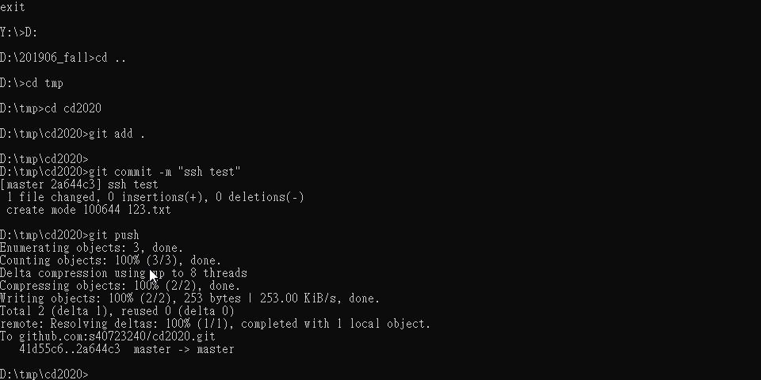
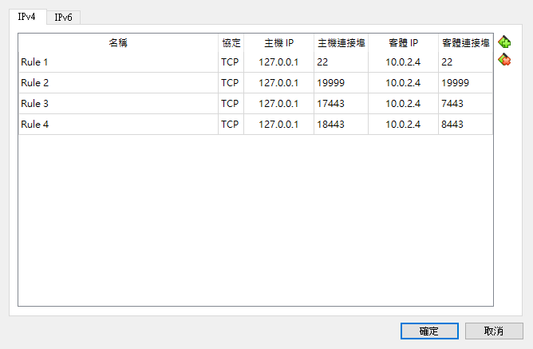
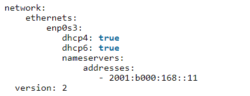
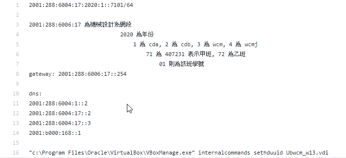

week1-week9 <<
Previous Next >> Assignment
week10-week17
google 用戶登入設定
1.建立專案cd2020(名稱無限制
2.git clone https://github.com/mdecourse/cd2020pj1.git
3.啟用API和服務->google+Domains API->啟用
4.憑證->設定同意畫面
5.點內部->建立
6.名稱cd2020->儲存
7.建立憑證->oauth用戶端ID->網路應用程式->建立
8.複製ID和密碼並儲存到pj1下 (檔案名稱 oauth_學號.txt
9.網路用戶端1->已授權的javascript來源 https://localhost:8443
已授權的重新導向url https://localhost:8443/login/google/ 儲存
10.leo->cd2020pj1->@edit config.py 將路徑改成自己的檔案名稱->儲存後點drawROCtojs
11.Y:\>pip install authomatic
12.cd2020pj1\python wsgi.py
13.輸入https://localhost:8443測試是否完成
以ssh維護倉儲
參考資料:老師
1. 下載 Putty 工具組
2. 利用 y:\portablegit\bin\sh.exe
在sh環境下輸入
|
1
|
ssh-keygen -t rsa -b 4096 -C "40723240"
|
在 /y/home/.ssh 目錄下建立 id_rsa 與 id_rsa.pub 等 private key 與 public key
之後以 SciTE 開啟 id_rsa.pub 後, 將此 public key 的內容, 以新增添加到 Github.com 帳號下 personal settings -> SSH and GPG keys 頁面下.
3. 接下來要利用 puttygen.exe 將 id_rsa 轉為 Putty 可以解讀的 .ppk 格式, 並修改隨身系統的啟動批次檔案
|
1
2
3
4
|
修改啟動的 start.bat 加入下列設定:
set GIT_HOME=%Disk%:\portablegit\bin\
set GIT_SSH=%Disk%:\putty\plink.exe
|
4. 利用 puttygen.exe 載入第二步驟所建立的 private key, 也就是 id_rsa.
開啟 puttygen 之後, 以右下方的 load 載入 id_rsa, 成功載入後, 利用 save private key 按鈕, 將已經轉為 putty 格式的 .ppk 存檔. 此一 .ppk 檔案必須在設定 putty 中 github.com session 時, 在 Connection->SSH->Auth 項目下, 將轉檔後的 .ppk 指向 private key file for authentication 欄位.
並在 Connection->Proxy 項目下, 指定 Proxy type: HTTP, 並將 IPv6 代理主機設為::69埠號設為 3128.
5. 之後確定 home 下的 .ssh 目錄中的 config 設定檔案為:
|
1
2
3
4
5
6
7
8
9
10
11
12
13
14
15
16
17
18
|
# no proxy at home
#ProxyCommand y:/PortableGit/mingw64/bin/connect.exe -H proxy.mde.nfu.edu.tw:3128 %h %p
# set git_ssh=y:/putty/plink.exe with auth under putty github.com session setup
ProxyCommand y:/putty/plink.exe github.com %h %p
Host github.com
User git
Port 22
Hostname github.com
# for connect.exe need openssh key format
#IdentityFile "y:\home\.ssh\id_rsa_mdecourse"
# for plink.exe need rsa key format but set under putty github.com session
# plink.exe do not need the following setting
#IdentityFile "y:\home\.ssh\mdecourse_putty_private.ppk"
TCPKeepAlive yes
IdentitiesOnly yes
|
6. 最後再將cd2020倉儲中 .git 目錄下的 config 檔案中的連線協定, 由 https 改為採 ssh 連線: 範例如下:
|
1
2
3
4
5
6
7
8
9
10
11
12
13
14
15
16
17
18
|
[core]
repositoryformatversion = 0
filemode = false
bare = false
logallrefupdates = true
symlinks = false
ignorecase = true
[submodule]
active = .
[remote "origin"]
#url = https://github.com/s40723240/cd2020.git
url = git@github.com:s40723240/cd2020.git
fetch = +refs/heads/*:refs/remotes/origin/*
[branch "master"]
remote = origin
merge = refs/heads/master
[submodule "cmsimde"]
url = https:
|
之後就可以透過近端的 .ppk private key 與 Github.com 上的 public key 對應, 無需輸入帳號密碼就可以進行 git push.

ubuntu virtualbox設定
下載
1.ubuntu
2.Self-driving car
3.virtual box
設定網路新增NAT網路
匯入ubuntu
設定中的網路中的附加到設定為僅限主機介面卡(host-only)
啟動ubuntu
輸入密碼kmol2020
點選右上方activites->show application
點選LX terminal
輸入xterm&
輸入ls顯示資料
進入資料夾中輸入cd coppeliasim4_rev4
輸入ls查看資料夾中之資料
輸入cd CoppeliaSim_Edu_V4_0_0_ubuntu18_04
輸入./coppeliaSim.sh
coppeliasim car_model.py 模擬
設定NAT和網路埠號 22 19999
開啟coppeliasim匯入sdc.ttt
將car_model.py拉入編輯器將它啟動
將ubuntu中的coppeliasim執行模擬
ivp4對外連線 (可用於自己電腦)
密碼:kmol2020
1.喜好設定NatNetwork設定Ipv4，ubuntu設定網路調成Nat網路

2.開啟Lxterminal->ifconfig->sudo apt install net-tools
3.輸入ping 127.0.0.1進行測試
4.到cd2020pj1進行git pull
5.輸入sudo vi wsgi.py-> i(編輯內容)-> 對 host近端編輯設置為10.0.2.4
6.ESC->:wq儲存
7.開啟cd2020pj1.leo，在Nav搜尋allowExt(在fileuploadform位置新增ttt檔案)
8.在tmp輸入sudo vi oauth_scrum.txt (做測試)
9.返回cd2020pj1輸入python3 wsgi.py
10.進入https://127.0.0.1:18443/alogin->輸入admin->測試是否可以上傳ttt檔案
ipv4環境下遠端連線(可用於自己電腦)
1.搜尋自己電腦ip (cmd->ipconfig) 將自己的ipv4位址輸入到ubuntu網路的主機ip
2.開啟XLaunch.exe
3.設定putty(主機ip->X11允許打勾 輸入localhost0.0並儲存
4.開啟LXtermial->開啟putty->輸入帳密
5.cd tmp->cd cd2020pj1->git pull確認是否有新版本
6.cd docs->cd cmsimde
7.vi wsgi.py 按i編輯->host改為10.0.2.4->按ESC並輸入:wq儲存
8.輸入python3 wsgi.py
9.網址: https://自己的ip:17443
ipv6對外連線(學校使用)
1.設定ipv6及主機網絡nat network
2.啟動ubnutu->開啟Lxtermialermial->輸入cd /etc
3.cd apt > cd apt.conf.d
4.輸入sudo vi proxy.conf輸入密碼kmol2020->以i鍵進入編輯模式
5.輸入Acquire::http::proxy "http://[2001:288:6004:17::53]:3128";
6.esc->輸入:wq儲存，再用sudo apt update 來更新apt
7.ifconfig->sudo apt install net-tools，cd etc/netplan
8.輸入sudo vi 00-installer-config.yaml並且按照以下方式編排

9.輸入sudo netplan apply來更新
10.ping6 2001:288:6004:17::254對外部網路測試是否可以連線
11.新增埠號
12.輸入ifconfig 來查詢在ipv6下的guest，進入cd2020pj1->git config --global --add http.proxy [2001:288:6004:17::53]:3128
13.git pull更新，tmp->sudo vi oauth_scrum.txt
14.輸入sudo vi wsgi.py wsgi.py將近端的host更改成::
15.輸入python3 wsgi.py
16.https://[::1]:18443若要從後門啟動的話加一個/alogin
17.打開leo新增ttt檔案的上傳設定
18.測試是否可以上傳
ipv6下環境遠端連線(學校使用)
(要先完成ipv6對外連線)

依照上圖設定ipv6
進入cd2020pj1->git pull->cd docs->cd cmsimde
vi wsgi.py->i編輯->改成自己ip->按esc->:wq儲存
開putty(同設定ipv4)
網址:https://[ipv6位址]:17443(要關proxy)
filezilla設定
week1-week9 <<
Previous Next >> Assignment